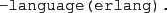
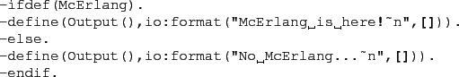
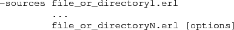
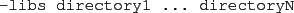
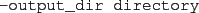
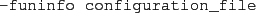
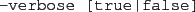
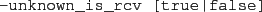
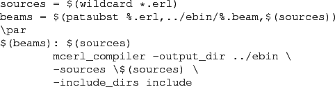

To prepare a set of Erlang source code files for use in McErlang
(i.e., to map function calls and translate receive statements) and
compile the resulting modules into object code the
mcerl_compile script is used2.
If a particular module should not be subjected to McErlang
code transformations one can add the compiler directive

anywhere in the source code of the module.
The Macro McErlang is defined if a file is compiled
using the McErlang compiler.
A trivial example:

Note that the @McErlang@ macro will be defined if
a file is compiled using McErlang, even if no transformations
are done because the file contains a @-language(erlang).@
directive.
The mcerl_compile script accepts the following parameters:
-

Specifies that the corresponding files should be compiled.
Multiple @-sources@
specification are allowed.
If a directory is specified, all the Erlang files in that directory
are selected for compilation.
Options are of two kinds, and only apply to a single
@-source@
specification:
- @-recursive@ specifies that
all subdirectories
of the source specifications should be searched, recursively,
for Erlang source files as well.
- @-include_dirs directory1 ... directoryN@
specifies that the specified directories are searched for include files
by the preprocessor.
-

Used to add library directories containing
alternative implementations of standard
Erlang modules. The order in which libraries are added is relevant
for searching for files. That is, directory1 is searched
before directory directory2.
The directory ``$MCERLANG/lib/erlang/src''
is the default location to search for libraries.
-

Specifies the directory where the resulting
.beam files are written (and where for debugging purposes .core files
containing HiPE Core Erlang code are written as well).
The default is to store .beam files in a directory ``ebin'', which shall be created before compilation.
-

Used to provide an alternative transformation configuration file
(see Section 2.1 above).
-

Used to provide more verbose output. If no argument
is specified true is assumed. The default is false.
-

Controls whether unknown functions are considered to have
(receive) side effects, for the purpose of the static analysis
(this is safe default option). The default is true.
-
An experimental option that causes actions that cause communications
to be considered side effects as well. Functions that are normally
declared as potentially causing communications
include erlang:link/1,
erlang:monitor/2, exit/2.
The default is false.
An example make file which compiles all the Erlang source files in the
current directory, and stores the beam files in ``../ebin'',
and which refers to include files in ``include'', is provided
below:

2010-07-05